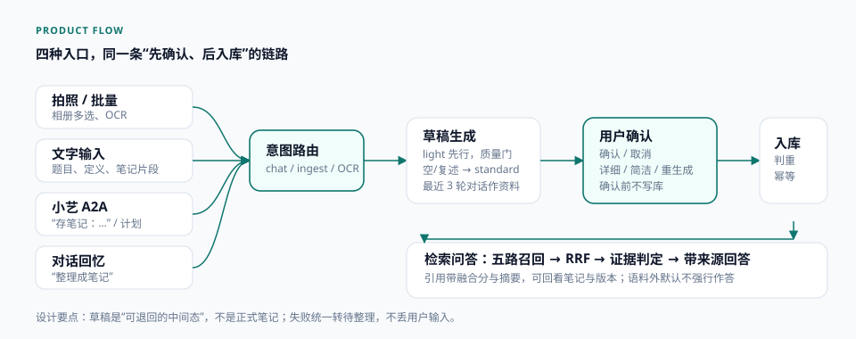
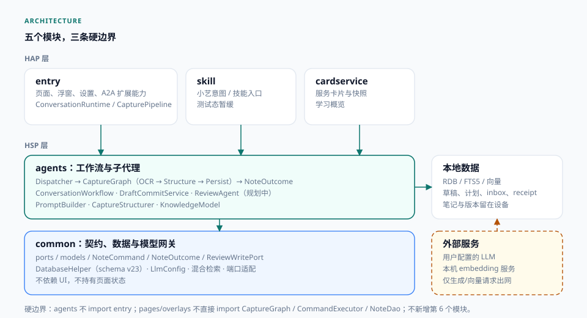
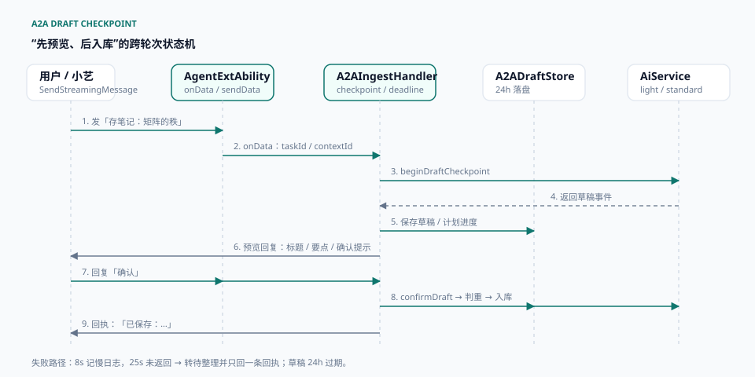
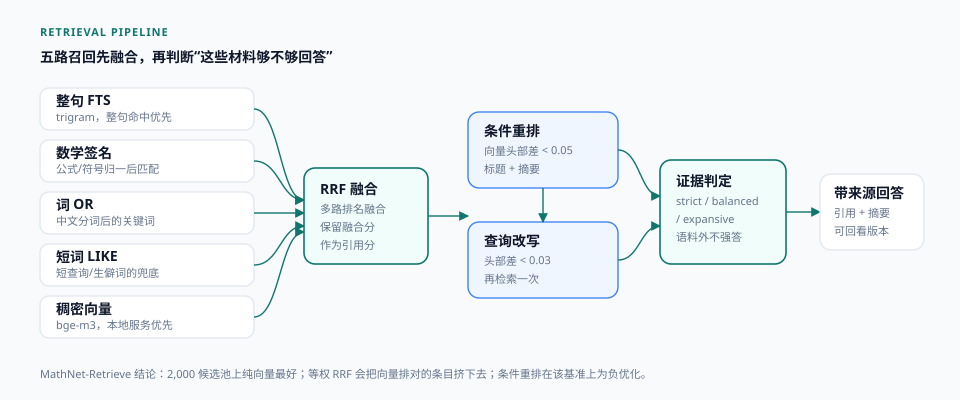
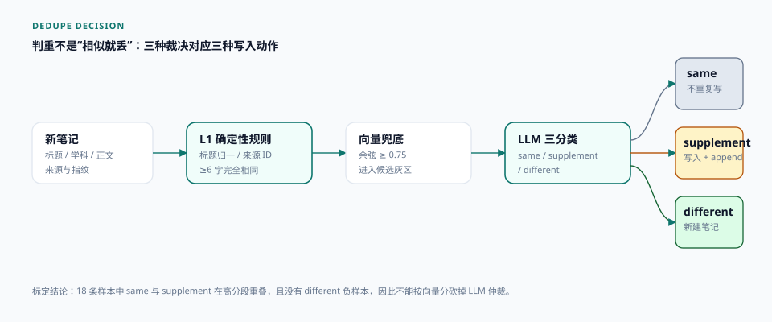

数学学习笔记与可追溯复习助手
鸿蒙原生 · 本地优先 · A2A 草稿确认 · 五路混合检索。 把拍照、文字和小艺消息整理成可确认、可追溯、可复习的结构化笔记。
数学材料天然分散：截图、题目、公式、零散文字。通用 AI 能回答但不可追溯；笔记应用能保存但整理成本高。 MindTrace 把“输入—整理—确认—复习—溯源”串成一条链路。
截图和题目散落在相册与聊天里；通用回答看似流畅，但无法回到“我的笔记”和具体版本。
先出草稿，用户确认才入库；复习时基于个人笔记检索，回答带来源、摘要与融合分。
产品流程、五模块架构、A2A 链路、检索与判重、测试与真机验证均由本人完成。
应用内拍照/批量/文字、A2A 文本与计划、对话回忆；确认前不写库。
五路召回、证据判定、三分类判重、幂等写入、schema v23。
测试态不推进应用市场；端侧模型受设备形态限制，未做全量验证。
入口可以很多，写入只能有一套规则：先出草稿、用户确认、再判重入库。失败不丢输入，统一转待整理。

相册多选最多 20 张，OCR 后按题规划；单题直接草稿，多题逐题预览、逐题确认。文字入口适合从聊天或文档粘贴。
小艺里说“存笔记：矩阵的秩”，先回标题和要点，再问是否保存；先问一道题再说“整理成笔记”，用上一轮问答作资料。
| 阶段 | 做什么 | 关键约束 |
|---|---|---|
| 路由 | 识别 chat / ingest / OCR / 计划推进 | 短命令才当确认，避免误判提问 |
| 生成 | light 先行，质量门不过改 standard | 3–6s 目标；空/复述原文不算可用草稿 |
| 落盘 | 按 conversationKey 保存 24h | 跨轮次确认；计划项保存进度 |
| 预览 | 标题、学科/题型、最多 4 节要点 | 最后才问是否整理保存 |
| 二次操作 | 详细 / 简洁 / 重新生成 | 新稿成功后才覆盖旧稿 |
| 入库 | 判重、幂等写入、回执 | 确认前不创建正式笔记 |
模块数量不是重点；重点是页面不直接碰图执行器，agents 不反向依赖 entry，数据契约留在 common。

工作流可被 A2A、应用内、后台任务复用；反向 import 会让三个入口重新耦合。
pages / overlays 不能直接 import CaptureGraph、CommandExecutor 或 NoteDao。
新能力优先放进 common 的端口或 agents 的子代理。
笔记、草稿、计划、判重、检索索引、inbox 与回执都在应用沙箱；本地 BGE 服务优先。
用户配置的 LLM（生成、回答、查询改写）与可选云端 embedding；只发送生成所需的最小上下文。
A2A 单任务只允许一次最终回复。所以草稿必须落盘、跨轮次确认，失败要能转待整理，而不是让用户重发。

确认 / 保存 / 好的 → confirmDraft；命中判重时复用已有笔记。
取消 / 不要了 / 算了 → 丢弃草稿；计划项同时取消计划。
详细走 standard；简洁、重新生成走 light；失败保留旧稿。
| 字段 | 用途 |
|---|---|
| conversationKey | 跨轮次找回草稿；小艺会话上下文 |
| event | 标题、学科、题型、章节与正文 |
| sourceText | “详细 / 简洁 / 重新生成”的原始资料 |
| planTaskId / planItemIndex | 计划项确认后回写进度 |
| createdAt | 24h 过期与清理 |
产品体验的差异往往在失败路径。这里的取舍是：宁可转待整理，也不让用户无限等，更不允许一次请求回两条互相矛盾的回执。
| 动作 | 路由 | 真机耗时 | 结果 |
|---|---|---|---|
| 生成草稿 | light | 3.2s | 标题 + 4 段要点 + 确认提示 |
| 详细一点 | standard | 11.4s | 636 字，补充推导与易错点 |
| 简洁一点 | light | 1.3s | 107 字，核心定义与结论 |
| 重新生成 | light | 2.5s | 247 字，保留标准字段 |
| 确认入库 | 判重 + 写入 | 220ms | “已保存：矩阵的秩与初等变换（线性代数）。” |
| 超时兜底 | 入队 | 25s | 只回一条，转待整理 |
| 场景 | 处理 | 用户看到 |
|---|---|---|
| 8s 未返回 | 记慢请求日志，不打断生成 | 无变化，继续等 |
| 25s 未返回 | 取消 token，入待整理队列 | “这次整理较慢，已转待整理……” |
| 草稿为空 / 复述原文 | 取消 run，改 standard 重试 | 稍慢，但拿到可用草稿 |
| 确认时命中判重 | 复用已有笔记，不重复创建 | “已保存（复用）：……” |
| 计划某题失败 | 保留计划进度，可继续/取消 | “第 N 题这次没整理成……” |
| 维度 | 改动前 | 改动后 |
|---|---|---|
| 写入时机 | 收到文本直接入库 | 先生成草稿，确认后才入库 |
| 模型挂起 | 最长等 90s | 25s 回执并转待整理 |
| 失败回执 | 入队与调用方各回一条 | 统一只回一条 |
| 单题重试 | 请求文本可能重复入队 | 多题才补剩余题，单题只入一次 |
五路召回解决“换个说法就搜不到”；证据判定解决“搜到了但不该拿来回答”。两件事分开，策略才能显式配置。

| 通道 | 解决什么 | 边界 |
|---|---|---|
| 整句 FTS | 原句或高度重合的表述 | 换说法就失效 |
| 数学签名 | 公式、符号、结构相似 | 依赖归一化质量 |
| 词 OR | 关键词部分命中 | 长题干噪声多 |
| 短词 LIKE | 短查询、生僻词 | 只适合兜底 |
| 稠密向量 | 语义等价、改写 | 需要本地或云端 embedding |
判定不可用时 fail-closed，视为无证据。
默认档；判定不可用时 fail-open，保留候选。
跳过判定，允许证据不足时继续。
| 阶段 | 触发条件 | 代价 / 取舍 |
|---|---|---|
| RRF 融合 | 每一路返回候选后 | 保留融合分作为引用分；等权会放大词面噪声 |
| 条件重排 | 向量头部差 < 0.05 | MathNet 上 79 次触发、480s，hit@1 再降 10 条 |
| 查询改写 | 向量头部差 < 0.03 | 多一次 LLM 调用，只在头部很接近时启用 |
MathNet-Retrieve：15,000 条查询 / 117,088 条语料。这里使用 easy 档中文子集 334 条查询、固定 2,000 候选池； 不再使用自建 100 条夹具对外报指标。
| 变体 | hit@1 | hit@5 | MRR | nDCG@10 |
|---|---|---|---|---|
| 词面 BM25 | 216 | 262 | 0.705 | 0.734 |
| 向量 body | 286 | 314 | 0.895 | 0.914 |
| 混合 body（RRF） | 242 | 296 | 0.793 | 0.833 |
| 混合 + 条件重排 | 232 | 288 | 0.766 | 0.804 |
2,000 候选池上纯向量最好；等权 RRF 会把向量排对的条目挤下去。条件重排在该基准上是负优化（79 次触发、480s，hit@1 再降 10 条）。
候选池只抽 2,000 条且含约 16.7% gold，命中率不能和全语料 BEIR 榜单直接比较。
MathNet-Retrieve（CC-BY-4.0）；easy 档中文子集 334 条查询，按 CJK 过滤。
包含全部 334 条 gold；随机命中基线约 16.7%，用于比较排序而非绝对值。
fetch-mathnet.mjs + eval.mjs；数据缓存 git 忽略，结果写入研究日志。
判重、幂等写入和测试门禁解决同一个问题：跨入口、跨进程改同一份数据时，结果要可预测。

| 裁决 | 含义 | 动作 | 用户可见 |
|---|---|---|---|
| same | 同一内容 | 不重复写，复用已有笔记 | “已保存（复用）：……” |
| supplement | 相关但新增了信息 | 照常写入，并发 append 建议 | 新笔记 + 合并建议 |
| different | 只是相似，不是同一主题 | 新建笔记 | 正常保存 |
本地提交前跑质量门；契约测试守住跨模块边界；真机冒烟验证平台链路。没有 gate 输出的“已完成”不算完成。
| 检查 | 结果 | 作用 |
|---|---|---|
| arkts-lint | PASS | ArkTS 严格模式规则 |
| naming-lint | PASS | 文件、目录、符号命名 |
| link-check | PASS | 文档链接可达 |
| doc-trace | PASS | 文档索引与编号唯一 |
| process-boundary | PASS | 6 个入口 / 429 个文件可达，受限能力不越界 |
| hypium-check | PASS | 22 个测试源与生成物一致 |
| unit-tests | 1,361 通过 | 契约测试 + 单元测试 |
多题逐题预览，确认一题保存一题；计划进度可继续、可取消。
3.2s 预览；详细 11.4s、简洁 1.3s、重新生成 2.5s；确认 220ms 入库。
8s 慢日志，25s 转待整理；真机只出现一条回执，pending 计数递增。
“已实现”不等于“已验证”。下面把能力状态单独列出，避免把测试态项目说成已上线产品。
| 能力 | 状态 | 说明 |
|---|---|---|
| 应用内拍照 / 批量 / 文字 | 已验证 | 真机批量、OCR、草稿确认与入库 |
| A2A 草稿确认 / 二次操作 | 已验证 | 3XTYD24C16203663 真机 + 冒烟脚本 |
| 混合检索 / 证据判定 | 已验证 | MathNet 离线评测 + 真机探针 |
| 判重三分类 / 幂等写入 | 已验证 | 契约测试 + schema v23 迁移 |
| A2A 图片输入 | 平台阻塞 | 小艺客户端不下发 image parts；应用内批量不受影响 |
| A2A 长文本流式 | 部分 | 短回复可增量渲染；长文本会被客户端截断 |
| 端侧模型 | 部分 | 受设备形态限制，未做全量验证 |
| 上架 / 意图注册 | 暂缓 | 测试态，依赖平台审核与上架 |
正常草稿 3.2s；25s 足够覆盖慢请求。继续等只会让用户重发，反而制造重复请求。
18 条样本无法区分高分段 same / supplement，也没有 different 负样本；砍掉仲裁会误合并。
小艺客户端会截断长 artifactUpdate；短回复才分块，长回答用完整的 result.task 快照。
从“能回答”到
“能确认、能追溯”
这个项目最想展示的不是功能数量，而是三个判断：写入前先确认，回答前先判断证据， 相似内容不要轻易丢掉。剩下的是把这些判断落到跨进程、跨入口的工程约束里。
本文件，可直接上传或发给招聘方。
源码、ADR、spec、研究日志与评测脚本；公开用于作品评审。
六页设计说明：首页、流程、架构、A2A、检索、质量。
拍照/批量 → 草稿确认 → 小艺 A2A → 检索问答 → 超时兜底。
| 时间 | 演示内容 | 要证明什么 |
|---|---|---|
| 0:00–0:30 | 一句话定位 + 四条入口 | 产品问题与范围 |
| 0:30–1:30 | 拍照/批量 → 草稿 → 确认保存 | 确认前不写库 |
| 1:30–2:15 | 小艺 A2A → 详细一点 → 确认 | 跨轮次草稿与二次操作 |
| 2:15–2:45 | 基于笔记提问 → 来源 | 检索与可追溯 |
| 2:45–3:00 | 模型慢 → 25s 回执 | 失败兜底 |